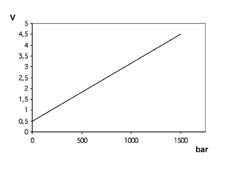
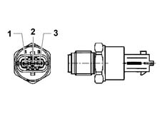

1060GE Check on operation of diesel high pressure sensor
- Path
- Test > 10 ENGINE UNIT > 1060 DIESEL FUEL INJECTION > 1060G pressure pump electric control > 1060GE Check on operation of diesel high pressure sensor
- Kind
- test / check procedure
- Applies to
- engines: 1.3 JTD 16v; all production periods
- Interactive page
- https://sloeber94.github.io/elrnDB-fPnd/en/#/2753414
Applies to: engines: 1.3 JTD 16v; all production periods
Check that the sensor output voltage varies in a linear fashion between 0.5 V (0 bar) and 4.5 V (1500 bar) as illustrated in the enclosed graph

Applies to: engines: 1.3 JTD 16v; all production periods
Graph [Fuel pressure - Output voltage]

Applies to: engines: 1.3 JTD 16v; all production periods
Pin 1, description: earth, signal type: earth.
Pin 2, description: sensor output, signal type: analogue output.
Pin 3, description: supply, signal type: 5 V input.